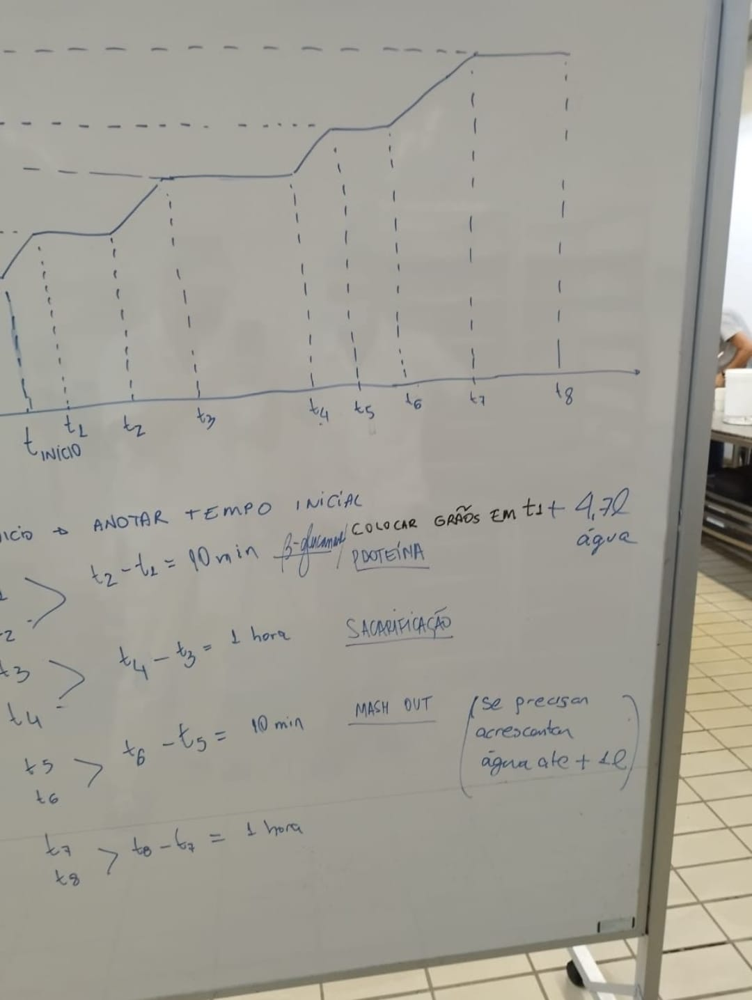

Nossos
Processos
Um pouco sobre os processos de criação da cerveja.

Um pouco sobre os processos de criação da cerveja.
A cerveja produzida corresponde ao estilo Blond Ale. O processo de fabricação foi iniciado com a adição de 4,7 litros de água à panela de mostura, sendo que a fonte de calor utilizada foi o fogão, devidamente ajustado para possibilitar o aquecimento gradual e controlado da água.
Em seguida, o sistema de controle de temperatura, composto pelo Arduino e pelo sensor LM35, foi acionado, de modo que pudesse monitorar continuamente a evolução térmica do processo. Esse sistema foi calibrado para sinalizar assim que a água atingisse o primeiro patamar de 42 °C, garantindo, assim, a precisão térmica necessária para a correta condução da etapa subsequente.
Tão logo a temperatura da água alcançou 42 °C, procedeu-se ao registro do tempo exato em que esse patamar foi atingido e, imediatamente após, realizou-se a adição do saco de brassagem. Neste momento, foram inseridos os seguintes grãos: Malte Pilsen (0,65 kg), Malte Cara Pils (0,07 kg), Malte Melanoidina (0,05 kg) e Flocos de Aveia (0,05 kg). Esta primeira rampa foi mantida por 10 minutos, assegurando a estabilização da temperatura em 42 °C e favorecendo o início das reações enzimáticas pertinentes.
Posteriormente, ajustou-se novamente a fonte de calor para promover a elevação da temperatura até 50 °C, sendo que o sistema de controle indicou, em tempo real, quando esse novo patamar foi atingido. Durante esse processo, a mistura foi constantemente mexida, a fim de evitar que os grãos se depositassem e aderissem ao fundo da panela, o que poderia comprometer tanto a eficiência da extração quanto a qualidade sensorial da cerveja. Assim que a temperatura alcançou 50 °C, efetuou-se o devido registro do horário.
Na sequência, manteve-se a mistura nesta faixa de temperatura por 10 minutos e, ao término deste período, procedeu-se ao ajuste da fonte de calor, elevando-se gradativamente a temperatura até 66 °C. O momento em que esse patamar foi atingido também foi devidamente registrado. A mistura permaneceu a 66 °C por 60 minutos, sendo cuidadosamente mexida ao longo de todo o período, com o intuito de assegurar a homogeneização e a máxima eficiência do processo. Esta etapa prolongada visou à conversão enzimática dos açúcares, cuja conclusão foi confirmada mediante a realização do teste de iodo, que indicou a completa conversão do amido em açúcares fermentáveis.
Subsequentemente, realizou-se a elevação da temperatura até 78 °C (mash out), mantida por 10 minutos, com o objetivo de promover a inativação enzimática e facilitar a etapa de clarificação do mosto. O tempo no qual se atingiu 78 °C foi igualmente registrado.
Concluída a etapa de mostura, procedeu-se à separação do mosto em relação aos grãos por meio de filtragem manual, realizada com a renovação do saco de brassagem, restando-se, ao final, apenas o líquido na panela, livre de sólidos em suspensão.
Na sequência, o processo avançou para a etapa de fervura, a qual foi conduzida por 60 minutos, até que a mistura atingisse 100 °C. Após 10 minutos de fervura, realizou-se a adição do lúpulo Tettnang (8 g), permanecendo este na mistura pelos 50 minutos subsequentes, conferindo à cerveja as características desejadas de amargor e aroma.
Adicionalmente, aos 45 minutos de fervura, foi adicionado açúcar de cana (0,075 kg), contribuindo para o ajuste da densidade e potencial alcoólico da cerveja. Nos últimos 5 minutos da fervura, foram incorporados os adjuntos aromáticos, consistindo em casca de laranja Bahia (3 g), cuidadosamente preparada, com a remoção da parte branca (albedo), a fim de evitar sabores indesejáveis, e semente de coentro moída (2 g), agregando complexidade e notas aromáticas específicas à bebida.
Concluída a fervura, procedeu-se à etapa de resfriamento rápido do mosto até 20 °C, utilizando-se um chiller de imersão, enquanto a temperatura foi monitorada pelo sistema, ainda que sem a atuação automática sobre o controle térmico nesta fase.
O mosto resfriado foi então transferido para o fermentador, onde se realizou a inoculação do fermento SafAle S-33 (2,5 g). A fermentação foi conduzida a uma temperatura controlada de 20 °C, monitorada pelo sistema, porém, novamente, sem atuação ativa sobre o controle térmico nesta etapa.
Após o término da fermentação, procedeu-se ao envase, com a adição de priming na proporção de 3 g/L de açúcar, conforme as boas práticas de carbonatação natural, visando garantir a formação adequada de CO₂ na cerveja final.
Cabe ressaltar que, durante todo o processo, a densidade do mosto foi sistematicamente monitorada, visando a correção necessária para que se alcançasse a OG (Original Gravity) pré-fervura de 1,047, conforme os parâmetros estabelecidos para o estilo Blond Ale.
Para que o processo de preparação da cerveja artesanal proposto neste projeto se dê de maneira satisfatória, é essencial a realização de um controle preciso da temperatura, especialmente no que tange a etapa de fervura, a fim de garantir que a qualidade final da bebida seja ótima. Nesse sentido, o sistema elaborado contou com um sistema integrado entre Hardware e Software, com o uso de um microcontrolador Arduíno UNO para realizar o monitoramento e o controle da temperatura de forma automatizada.
O sistema de controle térmico desenvolvido visou automatizar e estabilizar a etapa de fervura da cerveja. Para isso, foi projetado um circuito que possibilitou o monitoramento preciso da temperatura e o acionamento proporcional do sistema de aquecimento.
A medição da temperatura foi realizada por um sensor LM35, selecionado por sua linearidade, precisão e facilidade de interface com microcontroladores. Esse sensor analógico fornece uma saída de 10 mV por grau Celsius e foi instalado em um tubo de cobre posicionado no interior da panela de fervura, assegurando o contato direto com o líquido. O sinal do sensor é conectado ao pino analógico A2 do microcontrolador Arduino UNO, que executa a conversão dos dados analógicos para valores digitais de temperatura.
Para o controle do aquecimento, empregou-se uma resistência elétrica alimentada pela rede de 220 V, cujo acionamento é realizado por um TRIAC BTA41-600B. Visando garantir o isolamento elétrico entre os circuitos de potência e controle, o disparo do TRIAC é feito por meio de um optoacoplador MOC3021. A detecção do cruzamento por zero da tensão alternada, fundamental para o controle por ângulo de fase, é realizada por um segundo optoacoplador, o 4N25, conectado a uma interrupção externa no pino digital 3 do Arduino.
Complementam o sistema os botões físicos para ajuste da temperatura de referência (setpoint), um display LCD 16x2 com módulo I2C para exibição das variáveis monitoradas, e um dissipador de calor em alumínio acoplado ao TRIAC, garantindo a segurança térmica do componente durante o funcionamento contínuo.
O código no microcontrolador Arduino UNO foi desenvolvido na linguagem C/C++, sendo responsável pela aquisição de dados, processamento das variáveis, controle da potência de aquecimento e interação com o usuário.
A função GetTemp() realiza a leitura da temperatura com base no sinal analógico fornecido pelo sensor LM35. Para garantir a estabilidade da leitura e mitigar os efeitos de ruídos, o algoritmo realiza múltiplas amostragens consecutivas, calculando a média aritmética dos valores obtidos. A conversão do valor de tensão para temperatura é feita considerando a escala de 10 mV/°C característica do sensor.
O ajuste do valor de referência (setpoint) é implementado por meio da função ajuste_setpoint(), que interpreta os sinais de dois botões conectados aos pinos digitais 8 e 9 do Arduino. Para evitar múltiplas leituras indesejadas causadas por oscilações mecânicas (efeito bouncing), foi utilizado um algoritmo de debounce baseado na função millis().
O controle da potência aplicada à resistência é realizado pela função zero_crosss_int(), acionada por interrupção externa a cada cruzamento por zero da rede elétrica. Essa técnica permite o controle de fase do TRIAC, ajustando o instante de disparo dentro de cada semiciclo da onda senoidal. O tempo de atraso entre o cruzamento por zero e o acionamento do TRIAC é calculado com base no erro entre a temperatura atual e o setpoint, sendo armazenado na variável power.
O algoritmo de controle adotado contempla duas abordagens: o controle proporcional segmentado e um modelo simplificado de controle PID (Proporcional-Integral-Derivativo). Na primeira abordagem, o valor do erro determina a faixa de potência aplicada, enquanto na segunda considera-se, além do erro atual, sua tendência e histórico, o que proporciona maior estabilidade e menor oscilação na temperatura do sistema.
A interface com o operador é realizada por meio de um display LCD 16x2, que exibe continuamente os valores da temperatura medida (Ta), do setpoint configurado (Ts) e da potência aplicada à resistência (Power). O símbolo de grau Celsius é representado no visor com o código ASCII correspondente via lcd.write(223).
A integração entre os componentes de hardware e o sistema de software foi essencial para a automatização eficiente do processo de fervura. O sensor LM35, acoplado ao tubo de cobre, fornece leituras contínuas da temperatura do líquido, que são adquiridas e processadas pelo Arduino UNO. O algoritmo embarcado trata essas informações com filtragem e média de amostragens, garantindo confiabilidade nas leituras.
Com base na diferença entre a temperatura atual e o setpoint configurado, o sistema calcula a potência necessária para o aquecimento, ajustando o instante de disparo do TRIAC dentro de cada semiciclo da rede alternada. Esse processo de controle por ângulo de fase, sincronizado com o cruzamento por zero, permite a modulação contínua da potência de forma segura, precisa e isolada eletricamente.
A comunicação entre o usuário e o sistema é feita por meio de uma interface simples e direta, composta por botões de ajuste e um display LCD. Essa interface permite o acompanhamento em tempo real do processo e ajustes dinâmicos durante a fervura.
Portanto, a integração do sistema proporciona uma solução robusta, acessível e de baixo custo para o controle térmico em processos de produção de cerveja artesanal, permitindo sua aplicação tanto em ambientes acadêmicos quanto em pequenos empreendimentos.
Conforme descrito nos tópicos anteriores, durante o desenvolvimento do sistema de controle de temperatura, foi inicialmente projetado um circuito de acionamento baseado na utilização do optoacoplador MOC3021, associado ao TRIAC BTA41-600B, para a realização da comutação da carga resistiva de aquecimento.
Entretanto, durante a fase de testes, foram observadas falhas recorrentes na estabilização do sensor de temperatura, comprometendo a precisão e a confiabilidade do sistema. Diante dessas dificuldades práticas e com o intuito de simplificar a implementação, bem como de assegurar a correta operação do sistema, optou-se pela substituição do conjunto optoacoplador-TRIAC por um relé de estado sólido (SSR), com controle de 5 V DC e capacidade de comutação de até 10 A em 220 V AC.
Esta modificação permitiu uma interface direta e segura com o Arduino, que opera com sinais de controle de 5 V, garantindo o acionamento preciso da resistência elétrica sem a necessidade de circuitos adicionais de disparo ou proteção (snubber).
Essa modificação resultou em um sistema mais robusto, confiável e de fácil manutenção, assegurando a estabilidade térmica necessária para a condução adequada das diversas etapas do processo cervejeiro, tais como mostura, fervura e resfriamento.